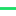

<!doctype html>
<html lang="en">
    <head>
        <meta charset="utf-8">
        <meta http-equiv="X-UA-Compatible" content="IE=edge">
        <meta name="viewport" content="initial-scale=1,user-scalable=no,maximum-scale=1,width=device-width">
        <meta name="mobile-web-app-capable" content="yes">
        <meta name="apple-mobile-web-app-capable" content="yes">
        <link rel="stylesheet" href="css/leaflet.css" />
        <link rel="stylesheet" type="text/css" href="css/qgis2web.css">
        <link rel="stylesheet" href="css/MarkerCluster.css" />
        <link rel="stylesheet" href="css/MarkerCluster.Default.css" />
        <link rel="stylesheet" href="http://k4r573n.github.io/leaflet-control-osm-geocoder/Control.OSMGeocoder.css" />
        <link rel="stylesheet" href="css/leaflet.draw.css" />
        <link rel="stylesheet" href="css/leaflet.measurecontrol.css" />
        <script src="js/leaflet.js"></script>
        <script src="js/leaflet-heat.js"></script>
        <script src="js/leaflet.rotatedMarker.js"></script>
        <script src="js/OSMBuildings-Leaflet.js"></script>
        <script src="js/leaflet-hash.js"></script>
        <script src="js/Autolinker.min.js"></script>
        <script src="http://k4r573n.github.io/leaflet-control-osm-geocoder/Control.OSMGeocoder.js"></script>
        <script src="js/leaflet.draw.js"></script>
        <script src="js/leaflet.measurecontrol.js"></script>
        <script src="js/leaflet.markercluster.js"></script>
        <style>
        html, body, #map {
            width: 100%;
            height: 100%;
            padding: 0;
            margin: 0;
        }
        </style>
        <title></title>
    </head>
    <body>
        <div id="map">
        </div>
        <script src="data/json_agps0.js"></script>
        <script src="data/json_cd111m1.js"></script>
        <script src="data/json_trimble2.js"></script>
        <script src="data/json_gt7503.js"></script>
        <script src="data/json_sportsbook4.js"></script>
        <script>
        var highlightLayer;
        function highlightFeature(e) {
            highlightLayer = e.target;

            if (e.target.feature.geometry.type === 'LineString') {
              highlightLayer.setStyle({
                color: '#ffff00',
              });
            } else {
              highlightLayer.setStyle({
                fillColor: '#ffff00',
                fillOpacity: 1
              });
            }
        }
        L.ImageOverlay.include({
            getBounds: function () {
                return this._bounds;
            }
        });
        var map = L.map('map', {
            measureControl:true,
            zoomControl:true, maxZoom:28, minZoom:1
        })
        var hash = new L.Hash(map);
        map.attributionControl.addAttribution('<a href="https://github.com/tomchadwin/qgis2web" target="_blank">qgis2web</a>');
        var feature_group = new L.featureGroup([]);
        var bounds_group = new L.featureGroup([]);
        var raster_group = new L.LayerGroup([]);
        var basemap0 = L.tileLayer('http://{s}.tile.thunderforest.com/outdoors/{z}/{x}/{y}.png', {
            attribution: '&copy; <a href="http://www.opencyclemap.org">OpenCycleMap</a>,&copy; <a href="http://openstreetmap.org">OpenStreetMap</a> contributors,<a href="http://creativecommons.org/licenses/by-sa/2.0/">CC-BY-SA</a>',
            maxZoom: 28
        });
        basemap0.addTo(map);
        var basemap1 = L.tileLayer('http://{s}.tile.openstreetmap.org/{z}/{x}/{y}.png', {
            attribution: '&copy; <a href="http://openstreetmap.org">OpenStreetMap</a> contributors,<a href="http://creativecommons.org/licenses/by-sa/2.0/">CC-BY-SA</a>',
            maxZoom: 28
        });
        basemap1.addTo(map);
        function setBounds() {
            if (bounds_group.getLayers().length) {
                map.fitBounds(bounds_group.getBounds());
            }
        }
        function geoJson2heat(geojson, weight) {
          return geojson.features.map(function(feature) {
            return [
              feature.geometry.coordinates[1],
              feature.geometry.coordinates[0],
              feature.properties[weight]
            ];
          });
        }
        function pop_agps0(feature, layer) {
            layer.on({
                mouseout: function(e) {
                    layer.setStyle(doStyleagps0(feature));

                },
                mouseover: highlightFeature,
            });
            var popupContent = '<table><tr><td colspan="2">' + (feature.properties['lat'] !== null ? Autolinker.link(String(feature.properties['lat'])) : '') + '</td></tr><tr><td colspan="2">' + (feature.properties['lon'] !== null ? Autolinker.link(String(feature.properties['lon'])) : '') + '</td></tr><tr><td colspan="2">' + (feature.properties['ele'] !== null ? Autolinker.link(String(feature.properties['ele'])) : '') + '</td></tr><tr><td colspan="2">' + (feature.properties['time'] !== null ? Autolinker.link(String(feature.properties['time'])) : '') + '</td></tr><tr><td colspan="2">' + (feature.properties['sat'] !== null ? Autolinker.link(String(feature.properties['sat'])) : '') + '</td></tr></table>';
            layer.bindPopup(popupContent);
        }

        function doStyleagps0(feature) {
            return {
                weight: 4.0,
                color: '#cb0248',
                dashArray: '',
                lineCap: 'square',
                lineJoin: 'bevel',
                opacity: 1.0
            };
        }
        map.createPane('pane_agps0');
        map.getPane('pane_agps0').style.zIndex = 601;
        var json_agps0JSON = new L.geoJson(json_agps0, {
            pane: 'pane_agps0',
            onEachFeature: pop_agps0,
            style: doStyleagps0
        });
        bounds_group.addLayer(json_agps0JSON);
        feature_group.addLayer(json_agps0JSON);
        function pop_cd111m1(feature, layer) {
            layer.on({
                mouseout: function(e) {
                    layer.setStyle(doStylecd111m1(feature));

                },
                mouseover: highlightFeature,
            });
            var popupContent = '<table><tr><td colspan="2">' + (feature.properties['Longitude'] !== null ? Autolinker.link(String(feature.properties['Longitude'])) : '') + '</td></tr><tr><td colspan="2">' + (feature.properties['Latitude'] !== null ? Autolinker.link(String(feature.properties['Latitude'])) : '') + '</td></tr><tr><td colspan="2">' + (feature.properties['Speed'] !== null ? Autolinker.link(String(feature.properties['Speed'])) : '') + '</td></tr><tr><td colspan="2">' + (feature.properties['Course'] !== null ? Autolinker.link(String(feature.properties['Course'])) : '') + '</td></tr><tr><td colspan="2">' + (feature.properties['Sat'] !== null ? Autolinker.link(String(feature.properties['Sat'])) : '') + '</td></tr><tr><td colspan="2">' + (feature.properties['HDOP'] !== null ? Autolinker.link(String(feature.properties['HDOP'])) : '') + '</td></tr><tr><td colspan="2">' + (feature.properties['Altitude'] !== null ? Autolinker.link(String(feature.properties['Altitude'])) : '') + '</td></tr><tr><td colspan="2">' + (feature.properties['date'] !== null ? Autolinker.link(String(feature.properties['date'])) : '') + '</td></tr><tr><td colspan="2">' + (feature.properties['time'] !== null ? Autolinker.link(String(feature.properties['time'])) : '') + '</td></tr><tr><td colspan="2">' + (feature.properties['distance'] !== null ? Autolinker.link(String(feature.properties['distance'])) : '') + '</td></tr></table>';
            layer.bindPopup(popupContent);
        }

        function doStylecd111m1(feature) {
            return {
                weight: 4.0,
                color: '#1bde66',
                dashArray: '',
                lineCap: 'square',
                lineJoin: 'bevel',
                opacity: 1.0
            };
        }
        map.createPane('pane_cd111m1');
        map.getPane('pane_cd111m1').style.zIndex = 602;
        var json_cd111m1JSON = new L.geoJson(json_cd111m1, {
            pane: 'pane_cd111m1',
            onEachFeature: pop_cd111m1,
            style: doStylecd111m1
        });
        bounds_group.addLayer(json_cd111m1JSON);
        feature_group.addLayer(json_cd111m1JSON);
        function pop_trimble2(feature, layer) {
            layer.on({
                mouseout: function(e) {
                    layer.setStyle(doStyletrimble2(feature));

                },
                mouseover: highlightFeature,
            });
            var popupContent = '<table><tr><td colspan="2">' + (feature.properties['Longitude'] !== null ? Autolinker.link(String(feature.properties['Longitude'])) : '') + '</td></tr><tr><td colspan="2">' + (feature.properties['Latitude'] !== null ? Autolinker.link(String(feature.properties['Latitude'])) : '') + '</td></tr><tr><td colspan="2">' + (feature.properties['Max PDOP'] !== null ? Autolinker.link(String(feature.properties['Max PDOP'])) : '') + '</td></tr><tr><td colspan="2">' + (feature.properties['Max HDOP'] !== null ? Autolinker.link(String(feature.properties['Max HDOP'])) : '') + '</td></tr><tr><td colspan="2">' + (feature.properties['Corr Type'] !== null ? Autolinker.link(String(feature.properties['Corr Type'])) : '') + '</td></tr><tr><td colspan="2">' + (feature.properties['Rcvr Type'] !== null ? Autolinker.link(String(feature.properties['Rcvr Type'])) : '') + '</td></tr><tr><td colspan="2">' + (feature.properties['GPS Date'] !== null ? Autolinker.link(String(feature.properties['GPS Date'])) : '') + '</td></tr><tr><td colspan="2">' + (feature.properties['GPS Time'] !== null ? Autolinker.link(String(feature.properties['GPS Time'])) : '') + '</td></tr><tr><td colspan="2">' + (feature.properties['Update Sta'] !== null ? Autolinker.link(String(feature.properties['Update Sta'])) : '') + '</td></tr><tr><td colspan="2">' + (feature.properties['Feat Name'] !== null ? Autolinker.link(String(feature.properties['Feat Name'])) : '') + '</td></tr><tr><td colspan="2">' + (feature.properties['Datafile'] !== null ? Autolinker.link(String(feature.properties['Datafile'])) : '') + '</td></tr><tr><td colspan="2">' + (feature.properties['Unfilt Pos'] !== null ? Autolinker.link(String(feature.properties['Unfilt Pos'])) : '') + '</td></tr><tr><td colspan="2">' + (feature.properties['Filt Pos'] !== null ? Autolinker.link(String(feature.properties['Filt Pos'])) : '') + '</td></tr><tr><td colspan="2">' + (feature.properties['Data Dicti'] !== null ? Autolinker.link(String(feature.properties['Data Dicti'])) : '') + '</td></tr><tr><td colspan="2">' + (feature.properties['GPS Week'] !== null ? Autolinker.link(String(feature.properties['GPS Week'])) : '') + '</td></tr><tr><td colspan="2">' + (feature.properties['GPS Second'] !== null ? Autolinker.link(String(feature.properties['GPS Second'])) : '') + '</td></tr><tr><td colspan="2">' + (feature.properties['GNSS Heigh'] !== null ? Autolinker.link(String(feature.properties['GNSS Heigh'])) : '') + '</td></tr><tr><td colspan="2">' + (feature.properties['Vert Prec'] !== null ? Autolinker.link(String(feature.properties['Vert Prec'])) : '') + '</td></tr><tr><td colspan="2">' + (feature.properties['Point_ID'] !== null ? Autolinker.link(String(feature.properties['Point_ID'])) : '') + '</td></tr></table>';
            layer.bindPopup(popupContent);
        }

        function doStyletrimble2(feature) {
            return {
                weight: 4.0,
                color: '#822a85',
                dashArray: '',
                lineCap: 'square',
                lineJoin: 'bevel',
                opacity: 1.0
            };
        }
        map.createPane('pane_trimble2');
        map.getPane('pane_trimble2').style.zIndex = 603;
        var json_trimble2JSON = new L.geoJson(json_trimble2, {
            pane: 'pane_trimble2',
            onEachFeature: pop_trimble2,
            style: doStyletrimble2
        });
        bounds_group.addLayer(json_trimble2JSON);
        feature_group.addLayer(json_trimble2JSON);
        function pop_gt7503(feature, layer) {
            layer.on({
                mouseout: function(e) {
                    layer.setStyle(doStylegt7503(feature));

                },
                mouseover: highlightFeature,
            });
            var popupContent = '<table><tr><td colspan="2">' + (feature.properties['WNO'] !== null ? Autolinker.link(String(feature.properties['WNO'])) : '') + '</td></tr><tr><td colspan="2">' + (feature.properties['TOW'] !== null ? Autolinker.link(String(feature.properties['TOW'])) : '') + '</td></tr><tr><td colspan="2">' + (feature.properties['Time'] !== null ? Autolinker.link(String(feature.properties['Time'])) : '') + '</td></tr><tr><td colspan="2">' + (feature.properties['Date'] !== null ? Autolinker.link(String(feature.properties['Date'])) : '') + '</td></tr><tr><td colspan="2">' + (feature.properties['DECEF_X'] !== null ? Autolinker.link(String(feature.properties['DECEF_X'])) : '') + '</td></tr><tr><td colspan="2">' + (feature.properties['DECEF_Y'] !== null ? Autolinker.link(String(feature.properties['DECEF_Y'])) : '') + '</td></tr><tr><td colspan="2">' + (feature.properties['DECEF_Z'] !== null ? Autolinker.link(String(feature.properties['DECEF_Z'])) : '') + '</td></tr><tr><td colspan="2">' + (feature.properties['ECEF_X'] !== null ? Autolinker.link(String(feature.properties['ECEF_X'])) : '') + '</td></tr><tr><td colspan="2">' + (feature.properties['ECEF_Y'] !== null ? Autolinker.link(String(feature.properties['ECEF_Y'])) : '') + '</td></tr><tr><td colspan="2">' + (feature.properties['ECEF_Z'] !== null ? Autolinker.link(String(feature.properties['ECEF_Z'])) : '') + '</td></tr><tr><td colspan="2">' + (feature.properties['Speed'] !== null ? Autolinker.link(String(feature.properties['Speed'])) : '') + '</td></tr><tr><td colspan="2">' + (feature.properties['Longitude'] !== null ? Autolinker.link(String(feature.properties['Longitude'])) : '') + '</td></tr><tr><td colspan="2">' + (feature.properties['Latitude'] !== null ? Autolinker.link(String(feature.properties['Latitude'])) : '') + '</td></tr><tr><td colspan="2">' + (feature.properties['Altitude'] !== null ? Autolinker.link(String(feature.properties['Altitude'])) : '') + '</td></tr><tr><td colspan="2">' + (feature.properties['Mode'] !== null ? Autolinker.link(String(feature.properties['Mode'])) : '') + '</td></tr></table>';
            layer.bindPopup(popupContent);
        }

        function doStylegt7503(feature) {
            return {
                weight: 4.0,
                color: '#dfdd37',
                dashArray: '',
                lineCap: 'square',
                lineJoin: 'bevel',
                opacity: 1.0
            };
        }
        map.createPane('pane_gt7503');
        map.getPane('pane_gt7503').style.zIndex = 604;
        var json_gt7503JSON = new L.geoJson(json_gt7503, {
            pane: 'pane_gt7503',
            onEachFeature: pop_gt7503,
            style: doStylegt7503
        });
        bounds_group.addLayer(json_gt7503JSON);
        feature_group.addLayer(json_gt7503JSON);
        function pop_sportsbook4(feature, layer) {
            layer.on({
                mouseout: function(e) {
                    layer.setStyle(doStylesportsbook4(feature));

                },
                mouseover: highlightFeature,
            });
            var popupContent = '<table><tr><td colspan="2">' + (feature.properties['WNO'] !== null ? Autolinker.link(String(feature.properties['WNO'])) : '') + '</td></tr><tr><td colspan="2">' + (feature.properties['TOW'] !== null ? Autolinker.link(String(feature.properties['TOW'])) : '') + '</td></tr><tr><td colspan="2">' + (feature.properties['Time'] !== null ? Autolinker.link(String(feature.properties['Time'])) : '') + '</td></tr><tr><td colspan="2">' + (feature.properties['Date'] !== null ? Autolinker.link(String(feature.properties['Date'])) : '') + '</td></tr><tr><td colspan="2">' + (feature.properties['DECEF_X'] !== null ? Autolinker.link(String(feature.properties['DECEF_X'])) : '') + '</td></tr><tr><td colspan="2">' + (feature.properties['DECEF_Y'] !== null ? Autolinker.link(String(feature.properties['DECEF_Y'])) : '') + '</td></tr><tr><td colspan="2">' + (feature.properties['DECEF_Z'] !== null ? Autolinker.link(String(feature.properties['DECEF_Z'])) : '') + '</td></tr><tr><td colspan="2">' + (feature.properties['ECEF_X'] !== null ? Autolinker.link(String(feature.properties['ECEF_X'])) : '') + '</td></tr><tr><td colspan="2">' + (feature.properties['ECEF_Y'] !== null ? Autolinker.link(String(feature.properties['ECEF_Y'])) : '') + '</td></tr><tr><td colspan="2">' + (feature.properties['ECEF_Z'] !== null ? Autolinker.link(String(feature.properties['ECEF_Z'])) : '') + '</td></tr><tr><td colspan="2">' + (feature.properties['Speed'] !== null ? Autolinker.link(String(feature.properties['Speed'])) : '') + '</td></tr><tr><td colspan="2">' + (feature.properties['Longitude'] !== null ? Autolinker.link(String(feature.properties['Longitude'])) : '') + '</td></tr><tr><td colspan="2">' + (feature.properties['Latitude'] !== null ? Autolinker.link(String(feature.properties['Latitude'])) : '') + '</td></tr><tr><td colspan="2">' + (feature.properties['Altitude'] !== null ? Autolinker.link(String(feature.properties['Altitude'])) : '') + '</td></tr><tr><td colspan="2">' + (feature.properties['Mode'] !== null ? Autolinker.link(String(feature.properties['Mode'])) : '') + '</td></tr></table>';
            layer.bindPopup(popupContent);
        }

        function doStylesportsbook4(feature) {
            return {
                weight: 4.0,
                color: '#0c2fcc',
                dashArray: '',
                lineCap: 'square',
                lineJoin: 'bevel',
                opacity: 1.0
            };
        }
        map.createPane('pane_sportsbook4');
        map.getPane('pane_sportsbook4').style.zIndex = 605;
        var json_sportsbook4JSON = new L.geoJson(json_sportsbook4, {
            pane: 'pane_sportsbook4',
            onEachFeature: pop_sportsbook4,
            style: doStylesportsbook4
        });
        bounds_group.addLayer(json_sportsbook4JSON);
        feature_group.addLayer(json_sportsbook4JSON);
        raster_group.addTo(map);
        feature_group.addTo(map);
        var osmGeocoder = new L.Control.OSMGeocoder({
            collapsed: false,
            position: 'topright',
            text: 'Search',
        });
        osmGeocoder.addTo(map);
        var baseMaps = {'Thunderforest Outdoors': basemap0, 'OSM': basemap1};
        L.control.layers(baseMaps,{' sportsbook': json_sportsbook4JSON,' gt750': json_gt7503JSON,' trimble': json_trimble2JSON,' cd111m': json_cd111m1JSON,' a-gps': json_agps0JSON,},{collapsed:false}).addTo(map);
        setBounds();
        </script>
    </body>
</html>
